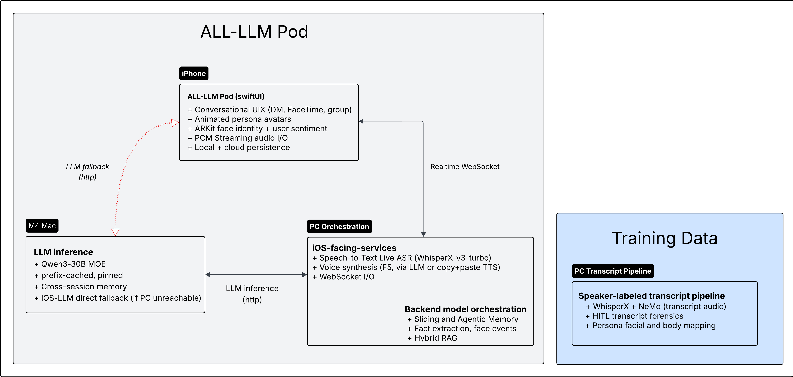

Multi-Agent LLM System
ALL-LLM Pod
Real-time text and voice interaction between multiple AI personas.
A full-stack, self-hosted multi-agent system that simulates the All-In Podcast hosts as conversational AI. Runs across an iOS client, a Windows GPU workstation, and Apple Silicon — with a custom ASR + diarization pipeline, hybrid RAG, per-user memory, and a SwiftUI client.

Click to enlarge · Live runtime and offline training pipeline
Corpus Stats · 538 Episodes
Source: 538 All-In Podcast uploads (episodes, clips, shorts) totaling 474.83 hours of wall-clock audio. After WhisperX + NeMo diarization and forensic repair, 84.5% of wall-clock time is attributed to a known speaker. Host-only speech below, after deduplication.¹
| Host | Speaker Hours | Segments |
|---|---|---|
| Jcal | 89.87 | 23,698 |
| Chamath | 85.44 | 15,282 |
| Sacks | 79.11 | 12,933 |
| Friedberg | 65.75 | 11,612 |
| Total | 320.16 | 63,525 |
¹ Dedupe step removed 3,438 segments (5.68 hours) across hosts — mostly short-utterance repeats (≤3 words) from re-cut clips and shorts. Of 474.83 hours total, 325.84 hours (68.6%) is host speech, 75.34 hours (15.9%) is guests, and 73.62 hours (15.5%) is unaccounted (silence, ads, music).
Origin · Forced Offload as Capability Upgrade
V1 shipped on a single Windows workstation with a 12 GB RTX 4070 Super. Whisper-small + Mistral 7B LLM + TTS all on one 12GB GPU. It worked, with tradeoffs: low VRAM ceiling meant tablestakes features like ASR fidelity and conversational memory had to be downgraded and made more limited.
The solution was supposed to be pragmatic — route the LLM to a Mac M-series over Tailscale to free PC VRAM for ASR and TTS. What the migration unlocked turned out to be larger than the problem it solved:
Unified memory. Apple Silicon holds a 30B 4-bit model (16.8 GB pinned) the PC literally cannot fit. The forced offload became an architectural capability the original setup couldn't reach.
Abliteration. The chosen model (Josiefied-Qwen3-30B-A3B-abliterated) has the refusal direction orthogonalized out of its weights. Personas stay in character without prompt gymnastics fighting safety reflexes that would otherwise leak into the host voice.
None of these were planned. They emerged from the constraint. In retrospect, I should have been looking earlier for this solution. The current v2 stack is the result of solving the VRAM problem and discovering, after the fact, that the solution was the right architecture for the product.
System Architecture · Lifecycle
ALL-LLM Pod is built as a three-stage lifecycle: raw podcast transcripts become structured training data; that training data assembles into deployable personas; the live system delivers them in real time over voice and text.
01Transcripts → Training Data
The source material is 538 episodes (clips, shorts, episodes) of the All-In Podcast. Each episode splits into two parallel tracks: one for text training signal, one for voice references.
Text-track quality is non-trivial: WhisperX has decoder-level failure modes that drop real utterances, and NeMo's speaker assignment has attribution-level failure modes that misroute them. Both are addressed by a forensic repair layer (dive.html, forensics.html).
Voice references for TTS are extracted in parallel: clips filtered for quality, indexed by prosody, curated into a per-persona reference pool for zero-shot F5-TTS synthesis. Both tracks feed Stage 2.
02Training Data → Personas
Each persona is assembled from several layers, none of which require fine-tuning.
Persona prompts. V2 uses ~2.3k-token system prompts for persona conditioning. Who they are, how they hedge, what they pivot to, how they push back — all abstracted from the transcripts. No few-shot examples in the prompt itself; the model carries the patterns. LoRA training on Qwen3 is deferred to a future Phase 3.
Voice exemplars. Extracted in Stage 1 and pulled by F5-TTS at sentence-level boundaries. Each persona maintains its own curated reference pool; the orchestrator pins a reference at session start and the F5 service caches the preprocessed waveform across turns.
Persona display assets. Avatars, names, locations, accent colors, and mouth-positioning are managed as an outfit organizer — interchangeable visual pieces that compose into each persona's presentation in the mobile client.
LoRA adapters. V1 shipped Mistral 7B + persona-specific LoRA adapters. V2 currently runs Qwen3-30B-A3B with prompt-only persona conditioning — the abliterated base model holds character well enough that LoRA isn't yet pulling weight. A future Phase 3 will revisit this with the corpus data already assembled.
03Personas → Live Inference
The live system spans three machines: an iOS client, a Windows workstation running the orchestrator (ASR + TTS + memory + control), and a Mac running the language model. All three communicate over Tailscale mesh.
ASR. WhisperX large-v3-turbo on CUDA. The iOS client streams 16-bit PCM at 16 kHz in 100ms chunks. When the user releases the mic, a 350ms tail capture protects trailing consonants before the final flush, and the server runs a quality re-pass on the full accumulated buffer. End-to-end cycle time on a 3-5 s utterance: 800ms–2.0 s.
Language model. Qwen3-30B-A3B abliterated, 4-bit quant MoE, served by omlx on Apple Silicon. The model is pinned in memory (TTL = pinned, 16.8 GB resident) and prefix-cache holds the persona system prompt across turns. The orchestrator assembles a per-turn prompt (base + persona + sliding window + retrieved long-term memories) and streams tokens back over HTTP.
TTS. F5-TTS on the Windows GPU. Responses are chunked on sentence boundaries; each chunk synthesizes against the active persona's reference clip and streams PCM back to iOS chunk-by-chunk, so playback starts before the full response finishes generating.
Memory. Two layers. A sliding window keeps the last ten turns of the active session in prompt context. An agentic memory layer indexes promoted turns with vector embeddings and recalls them by similarity. On session end, the conversation is summarized by the Mac LLM and the summary becomes available to the next session. Conversation history is persisted to local SQLite as source of truth, with backup to Supabase (multi-tenant schema).
Face identity and per-user memory. The iOS client uses ARKit face anchors to maintain a stable per-face identifier across sessions. The first time a face talks to a given persona, the persona introduces itself and asks who you are. On future calls, the persona greets you by name and references prior conversations. Facts extracted from the introduction (name, role, why-it-matters) are written to a per-(face, persona) store on iOS and surfaced into the system prompt on subsequent calls.
Sentiment streaming. ARKit blendshapes feed a 1Hz semantic state stream (engagement, attentiveness, confusion, valence) over the same WebSocket as ASR audio. A 15-second summary window emits a humanized line to the client log. Per-persona gaze policies adjust the avatar's eye behavior based on the inferrer's reading.
Instrumentation. A pipeline phase indicator at the bottom of the FaceTime view shows the current stage (Listening / Transcribing / Thinking / Speaking) alongside live per-stage timings — ASR, LLM, and TTS latency in milliseconds, with active-stage highlighting and a slow fade between turns.
The iOS client. SwiftUI app with an iMessage/FaceTime UX. Each persona is a contact you can DM (text) or FaceTime (voice). The PC is the primary orchestrator, but there's a Mac-direct fallback for LLM if the PC is unreachable, and a PC-direct TTS path if the Mac is the bottleneck.
Design Decisions
Why prefix caching matters more than hosted-API latency
Self-hosted LLMs running with prefix caching pin the persona system prompt (typically 2.3k tokens) in the KV cache across turns. The cost of the prompt is paid once at session start, not on every call. Hosted real-time APIs can't do this — every call re-tokenizes the system prompt from scratch.
For a long-running persona conversation, this is the difference between paying for 2.3k tokens of prompt overhead per turn versus paying for it once per session. The latency win compounds: warm-path LLM first-token sits around 1–3 s on this stack despite running on consumer Apple Silicon, because the cache is hot for the persona that's currently speaking.
Why self-hosted ASR/TTS still wins
Hosted real-time voice APIs ship a fixed pipeline: their codec, their tail-capture timing, their re-transcription pass, their voice choices. The latency numbers they publish are real, but they're achieved by removing knobs.
Self-hosting WhisperX-v3-turbo on a mid-range GPU gives 800ms–2.0 s on a 3–5 s utterance, including a deliberate 350ms tail capture and a full quality re-pass after the user releases the mic. Not sub-500ms — but the tradeoffs are visible and tunable. Trailing consonants get captured. Final transcriptions get aligned. F5-TTS draws from a custom per-persona reference pool, not a hosted voice menu.
The "new era" framing around hosted speech-to-speech APIs is generally a sales position. The architectural reality — encoder → transformer → decoder — hasn't changed; the seam just moved. Self-hosting remains the right call when the product differentiation lives in the stack itself.
Why abliteration + prompt-only personas (deferring LoRA)
LoRA adapters were V1's primary persona-injection mechanism. V2 dropped them, not because they failed, but because the abliterated Qwen3-30B-A3B base model holds persona character well enough on prompt alone that the marginal value of LoRA wasn't justifying the training pipeline cost.
Abliteration matters here for a non-obvious reason. The refusal direction in a stock-aligned LLM doesn't only fire on harmful requests — it also leaks into persona consistency. Personas with strong opinions get hedged. Personas with crude humor get sanitized. Personas with political positions get diluted. Surgically removing the refusal direction at the weight level (rather than fighting it in the prompt) means the persona prompt is the only signal shaping output.
LoRA training on Qwen3 remains on the roadmap for Phase 3, with the existing corpus data already prepared. Prompt-only is the V2 baseline because it ships now.
Performance & Instrumentation
The system has evolved from a single-workstation pipeline to a multi-machine architecture: Windows handles ASR, TTS, and orchestration on the RTX 4070 Super; Apple Silicon hosts the LLM via omlx with prefix-cached pinning. The trade — modestly higher latency for substantially more capable inference and lower PC memory pressure — is documented below.
Inference Runtime · V1 vs V2
| Metric | V1 (Original) | V2 (Current) |
|---|---|---|
| Stack | ||
| LLM Model | Mistral 7B + LoRA | Qwen3-30B-A3B abliterated (MoE, 3B active) |
| LLM Runtime | PC GPU (CUDA) | omlx on Apple Silicon (Metal) |
| ASR | WhisperX small, CPU | WhisperX large-v3-turbo, CUDA |
| TTS System | F5-TTS | F5-TTS, per-persona reference pool |
| Quantization | 4-bit / 8-bit (VRAM-constrained) | 4-bit MoE |
| Inference Hardware | 1× RTX 4070 Super (12 GB) | RTX 4070 Super + Apple Silicon |
| Latency — Warm Path | ||
| ASR Latency (3–5s utterance) | 388 ms | 800 ms – 2.0 s |
| LLM First-Token Latency | 692 ms | 1.0 – 3.0 s |
| LLM Throughput | — | 21 – 24 tok/s |
| TTS[0] Synthesis | 1,078 ms | 1.0 – 1.3 s |
| Time to First Audio (TTFA) | 2,167 ms | 3.5 – 4.5 s |
| Memory | ||
| Peak VRAM (PC GPU) | ~10.5 GB | ~3.3 GB (Whisper + F5) |
| Mac Unified Memory | — | 16.8 GB pinned (Qwen3-30B-A3B) |
| Capabilities | ||
| Stateful Chat | — | Sliding window (10 turns) |
| Cross-Session Memory | — | Session-end summarization |
| Per-Face Memory | — | ARKit identity + per-persona fact store |
| First-Meeting Flow | — | Persona introduces self & extracts facts |
| Sentiment Streaming | — | 1Hz ARKit semantic state |
| Per-Turn Metrics in UI | — | Live ASR / LLM / TTS timing strip |
| System Status Indicator | — | Green / Yellow / Grey dot |
| Cloud Backup | — | Supabase (multi-tenant) |
| Latency — Cold Start ¹ | ||
| LLM First-Token Latency | — | 30 – 60 s |
| Time to First Audio (TTFA) | — | ~ 45 s |
¹ Cold-start latencies measured on first request after model load. Warm-path latencies apply once weights are resident in memory and the prefix cache is hot for the active persona.